Cálculo II: modelagem computacional. Relatório com resultados, justificativas e imagens dos modelos.
Como foi feito. Cada questão tem um modelo interativo em um site (index.html: superfícies 3D com Plotly e controles para ponto, trajetória, nível e aproximação). As conclusões abaixo são demonstradas à mão e conferidas por verify.py, que faz 62 verificações simbólicas com SymPy. As figuras são evidência exploratória, não prova. Nas figuras, a propriedade valea propriedade falha
| domínio | imagem | justificativa | |
|---|---|---|---|
| $f_1=\sqrt{9-x^2-y^2}$ | $x^2+y^2\le9$disco fechado: fronteira incluída ($\sqrt0=0$) | $[0,3]$ | radicando $\ge0$; com $t=x^2+y^2\in[0,9]$, a raiz percorre $[0,3]$. A superfície é o hemisfério superior de $x^2+y^2+z^2=9$. |
| $f_2=\ln(4-x^2-y^2)$ | $x^2+y^2<4$disco aberto: fronteira excluída ($\ln0$) | $(-\infty,\ln4]$ | argumento $>0$; $4-t\in(0,4]$ e $\ln$ é crescente. Perto da fronteira, $z\to-\infty$. |
| $f_3=\dfrac1{x^2+y^2-1}$ | $x^2+y^2\ne1$duas peças: disco aberto e exterior | $(-\infty,-1]\cup(0,\infty)$ | denominador $\ne0$; com $u=t-1$, dentro $u\in[-1,0)$ e $1/u\le-1$; fora $u>0$ e $1/u>0$. |
Curvas de nível. Como as três dependem só de $x^2+y^2$, $f=c$ dá circunferências centradas na origem, de raio $\sqrt{9-c^2}$, $\sqrt{4-e^c}$ e $\sqrt{1+1/c}$, respectivamente. Sem curva quando $c\notin\operatorname{Im}f$: $c<0$ ou $c>3$ em $f_1$; $c>\ln4$ em $f_2$; $c=0$ ou $-1<c<0$ em $f_3$ (a equação daria $x^2+y^2<0$, ou $1/u=0$). Num ponto $(a,b)$, o programa substitui na condição e informa qual falhou, por exemplo $f_2(2,0)$: $\ln0$ não existe.
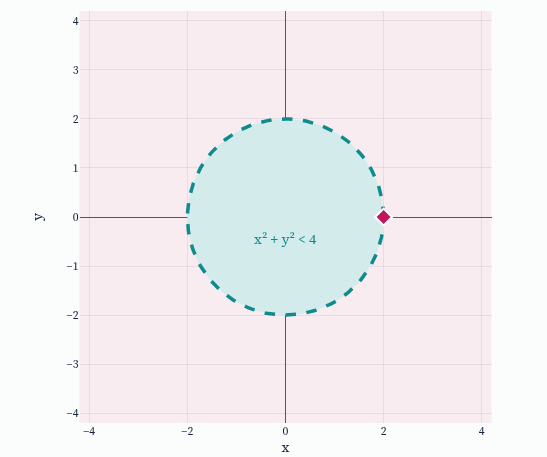
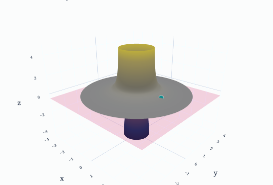
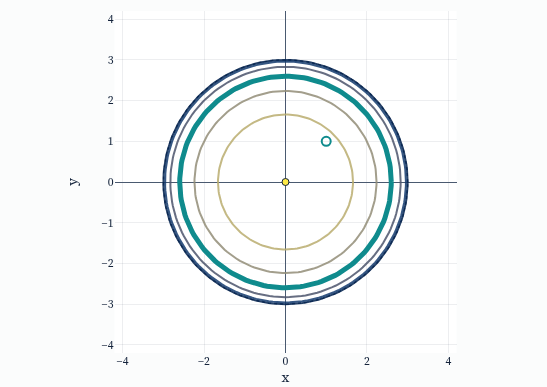
Entradas e saídas têm restrições diferentes.
Cada operação restringe a entrada (raiz real pede radicando $\ge0$, logaritmo pede argumento $>0$, divisão pede denominador $\ne0$). E a expressão só produz certos valores ($\sqrt{\cdot}\ge0$, $\ln(4-t)\le\ln4$, $1/u$ com $u\ge-1$ nunca cai em $(-1,0]$), o que deixa níveis vazios.
| limite em $(0,0)$ | $f(0,0)$ | continuidade | justificativa | |
|---|---|---|---|---|
| $f_1=\dfrac{x^2y}{x^2+y^2}$ | $0$ | $0$ | contínua | $|f_1|\le|y|\le\sqrt{x^2+y^2}$ (pois $\tfrac{x^2}{x^2+y^2}\le1$). Dado $\varepsilon$, $\delta=\varepsilon$ serve. |
| $f_2=\dfrac{xy}{x^2+y^2}$ | não existe | $0$ | descontínua | Ao longo de $y=mx$, $f_2=\dfrac{m}{1+m^2}$: $0$ para $m=0$ e $\tfrac12$ para $m=1$. |
| $f_3=\dfrac{x^2+y^2}{\sqrt{x^2+y^2+1}+1}$ | $0$ | $2$ | descontínuaremovível | Fora da origem, $f_3=\sqrt{x^2+y^2+1}-1$, contínua e igual a $0$ na origem. |
Por que o mesmo valor em algumas trajetórias não prova o limite. Dois valores diferentes provam que o limite não existe, mas a volta não vale: concordar em algumas trajetórias é só condição necessária. Em $f_2$, os eixos e as parábolas $y=x^2$ e $x=y^2$ dão $0$, e a diagonal dá $\tfrac12$. No exemplo extra $f_4=\dfrac{x^2y}{x^4+y^2}$, todas as retas dão $0$ (e os eixos também), mas ao longo de $y=x^2$ o valor é $\tfrac12$. Provar que existe exige uma majoração válida para todos os pontos próximos, como a de $f_1$.
Controle de $f(0,0)$. Reatribuir só $f(0,0)$ não altera o limite, que só depende dos pontos vizinhos. Em $f_3$, $f(0,0)=0$ torna a função contínua; em $f_1$, qualquer valor diferente de $0$ quebra a continuidade; em $f_2$, nenhum valor conserta.
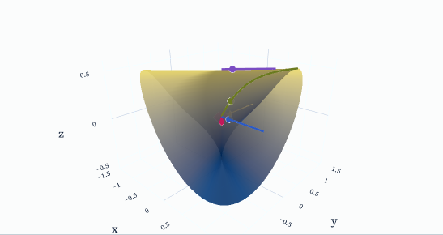
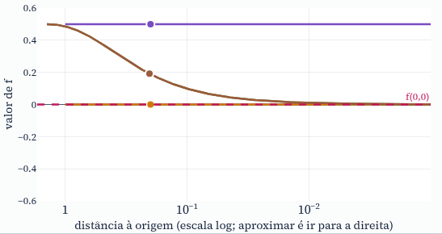
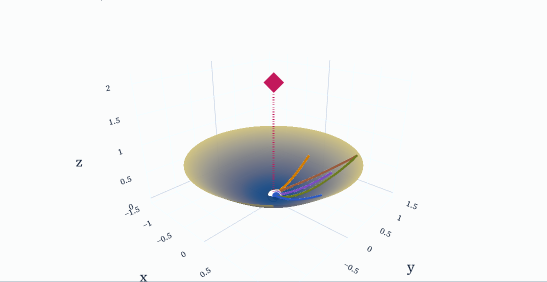
Três condições diferentes.
Valor é o que a regra atribui no ponto; limite é o que $f$ faz perto dele, ignorando-o; continuidade exige que o limite exista, que o valor exista e que sejam iguais. Cada uma pode falhar sozinha: em $f_3$ limite e valor existem e diferem; em $f_2$ o valor existe e o limite não.
| parciais em $(0,0)$ | contínua | diferenciável | quociente de erro $E$ | |
|---|---|---|---|---|
| $f=\dfrac{xy}{\sqrt{x^2+y^2}}$ | $f_x=f_y=0$ | sim$|f|\le\tfrac12\sqrt{x^2+y^2}$ | não | $E=\tfrac12\sin2\theta$: vale $\tfrac12$ na diagonal, sem tender a $0$. |
| $g=\dfrac{xy}{x^2+y^2}$ | $g_x=g_y=0$ | nãolimite não existe | não | $E=\dfrac{\sin2\theta}{2r}$: vale $\dfrac{1}{2\sqrt2\,t}\to\infty$ em $(t,t)$. |
Parciais pela definição. Para $h\ne0$, $f(h,0)=g(h,0)=0$ e $f(0,k)=g(0,k)=0$. Logo os quocientes incrementais $\dfrac{f(h,0)-f(0,0)}{h}$ e $\dfrac{f(0,k)-f(0,0)}{k}$ são todos nulos, e $f_x=f_y=g_x=g_y=0$ na origem. A candidata é $L(h,k)=0\cdot h+0\cdot k=0$, o plano $z=0$.
Cortes. Os cortes por $y=0$ e $x=0$ são a reta horizontal $z=0$, de inclinação $0$ (as parciais). Em outra direção $\theta$, $f(t\cos\theta,t\sin\theta)=\tfrac12|t|\sin2\theta$: um V com quina em $t=0$, sem tangente. Para $g$ o corte é $\tfrac12\sin2\theta$ com $g(0,0)=0$: um salto.
Diferenciabilidade. Com $f(0,0)=0$ e $L\equiv0$, $E(h,k)=f(h,k)/\sqrt{h^2+k^2}$ precisa tender a $0$ por todas as direções. Em $f$ vale $0$ nos eixos e $\tfrac12$ na diagonal. Em $g$ o quociente nem fica limitado. Nenhuma é diferenciável.
Relações lógicas. Diferenciável ⇒ contínua: $f(h,k)-f(0,0)=L(h,k)+E\sqrt{h^2+k^2}$, e os dois termos tendem a $0$. Diferenciável ⇒ parciais existem, e $L$ é dada por elas. As recíprocas falham: $f$ é contínua, tem parciais e não é diferenciável; $g$ tem parciais e não é nem contínua.
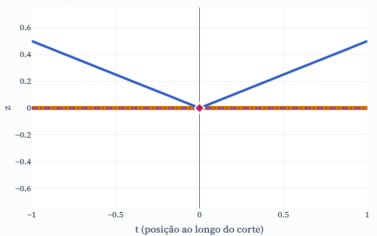
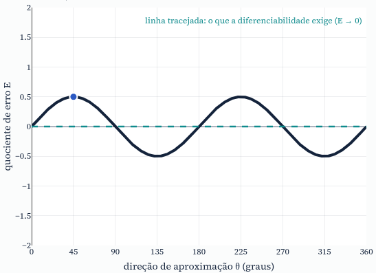
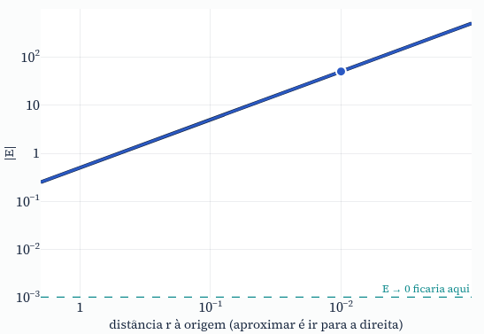
Parciais olham duas direções; diferenciabilidade olha todas.
Cada parcial vem de um corte reto ao longo de um eixo. Diferenciabilidade pede uma aplicação linear que aproxime $f$ em todas as direções, com erro menor que a distância. Em $f$ e $g$ os eixos são planos, mas nas demais direções a superfície sobe. Diferenciabilidade implica continuidade: sim; por isso $g$ não pode ser diferenciável.
Se $f$ é diferenciável em $(a,b)$, o plano tangente é $z=f(a,b)+f_x(x-a)+f_y(y-b)$ e a reta normal é $(a,b,f(a,b))+t(-f_x,-f_y,1)$. Para $\sigma(x,y)=(x,y,f)$, os vetores tangentes são $\sigma_x=(1,0,f_x)$ e $\sigma_y=(0,1,f_y)$, e $\sigma_x\times\sigma_y=(-f_x,-f_y,1)$. A hipótese a verificar é a diferenciabilidade; parciais contínuas numa vizinhança (classe $C^1$) bastam.
| pontos regulares | origem | exemplo | |
|---|---|---|---|
| $f_1=x^2+y^2$ | plano tangente$f_x=2x$, $f_y=2y$ contínuas | plano tangente$z=0$ | em $(1,2)$: $z=2x+4y-5$; normal $(-2,-4,1)$ |
| $f_2=\sqrt{x^2+y^2}$ | plano tangente$f_x=\tfrac xr$, $f_y=\tfrac yr$ contínuas | sem plano$f_x(0,0)$ não existe: $\tfrac{|h|}{h}=\pm1$ | em $(1{,}5;\,2)$: $z=0{,}6x+0{,}8y$ |
| $f_3=\dfrac{xy}{\sqrt{x^2+y^2}}$ | plano tangente$f_x=\tfrac{y^3}{r^3}$, $f_y=\tfrac{x^3}{r^3}$ contínuas | sem plano tangenteparciais $=0$, mas $f_3$ não é diferenciável | em $(1,1)$: $z=\dfrac{x+y}{2\sqrt2}$ |
Aproximação local. Diferenciabilidade significa $f(a+h,b+k)=f(a,b)+f_xh+f_yk+E\sqrt{h^2+k^2}$ com $E\to0$: a distância vertical entre superfície e plano é muito menor que a distância ao ponto, então, ao dar zoom, a superfície vira o plano. Em $f_1$, a diferença é exatamente $h^2+k^2$, logo $E=\rho$ (cai junto com a janela). Em $f_3$ na origem, $f_3(tx,ty)=t\,f_3(x,y)$: o zoom reproduz a mesma figura em qualquer escala, $E=\tfrac12$ na diagonal para todo $\rho$ e o plano $z=0$ nunca é tangente. No cone, nenhuma $L$ serve: $E(\varphi)+E(\varphi+\pi)\ge2$.
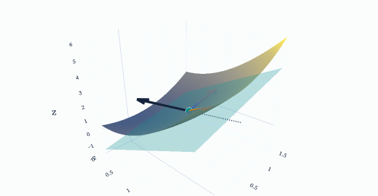
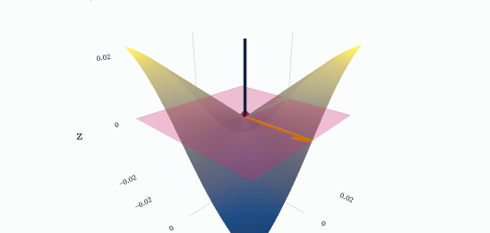
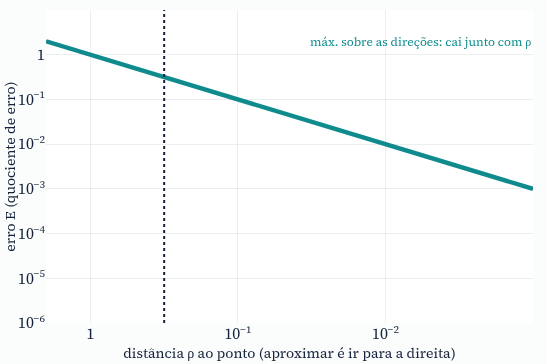
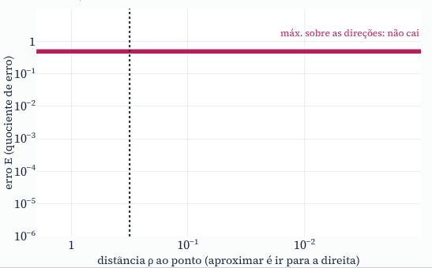
Plano tangente é uma aproximação linear em todas as direções.
Diferenciabilidade é a existência de uma $L$ linear com $f(a+h,b+k)-f(a,b)-L(h,k)=o\big(\sqrt{h^2+k^2}\big)$; o gráfico de $L$ deslocado para $P$ é o plano tangente, e $(-f_x,-f_y,1)$ é perpendicular a ele. Cortes com tangentes não bastam: duas retas tangentes, nas direções $x$ e $y$, sempre geram algum plano quando as parciais existem, mas ele nada diz sobre as demais direções. Em $f_3$ na origem, os dois cortes são horizontais e o plano $z=0$ os contém, porém a superfície sai dele na diagonal.
verify.py passou nas 62 verificações (imagens, limites, quocientes de erro, planos, produto vetorial).index.html no navegador. Para a verificação: python3 -m venv .venv && .venv/bin/pip install sympy && .venv/bin/python verify.py.